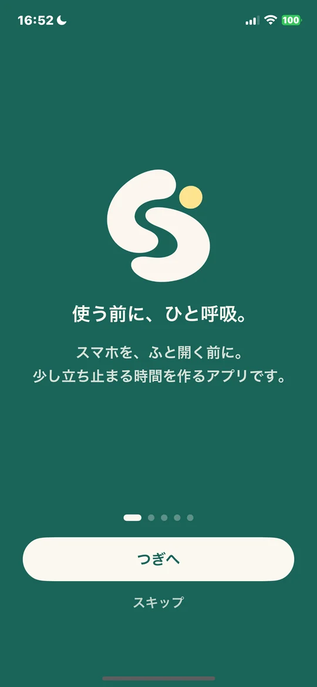
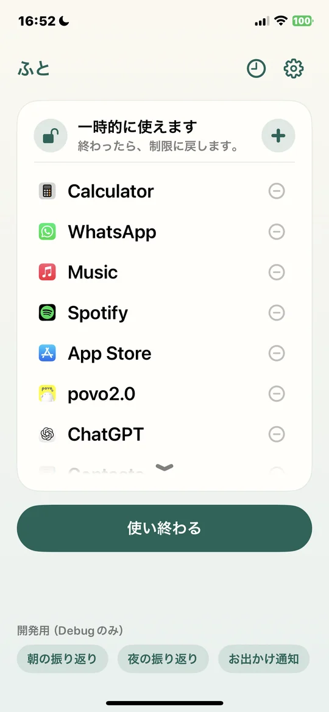
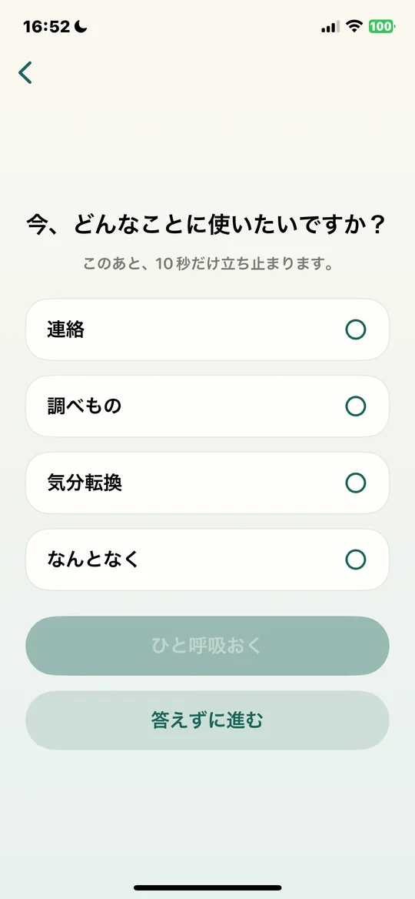
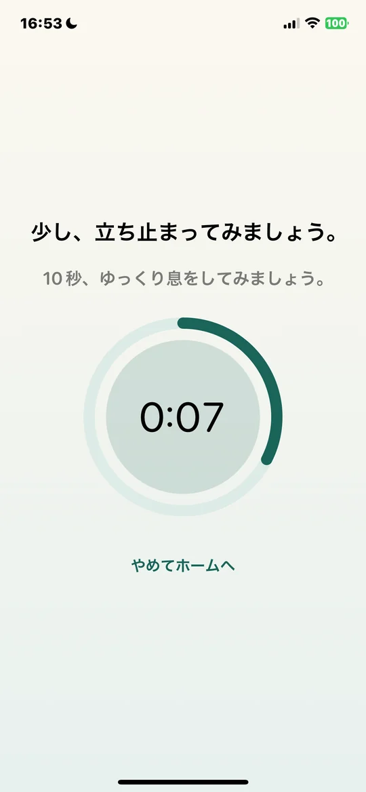
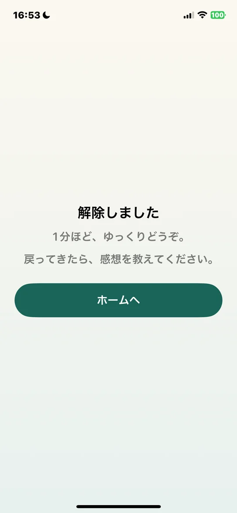

「ふと開く」から、「ふと気づく」へ。 From “just opening” to “just noticing”.
スマホを開く前に、ひと呼吸。使うかどうかを、自分で選ぶ iPhone アプリです。 A small iPhone app that gives you a breath before you open your phone — so using it is your choice.
GitHub で見るView on GitHub選んだアプリやサイトを、
使いたくなったら、
待ったあとで、
決めた時間だけ解除して、





アプリ・カテゴリ・ウェブサイトを、
今週・今月・すべて。
朝と夜に、短い言葉で。
任意で、初期はオフ。
記録は、この端末の中だけ。